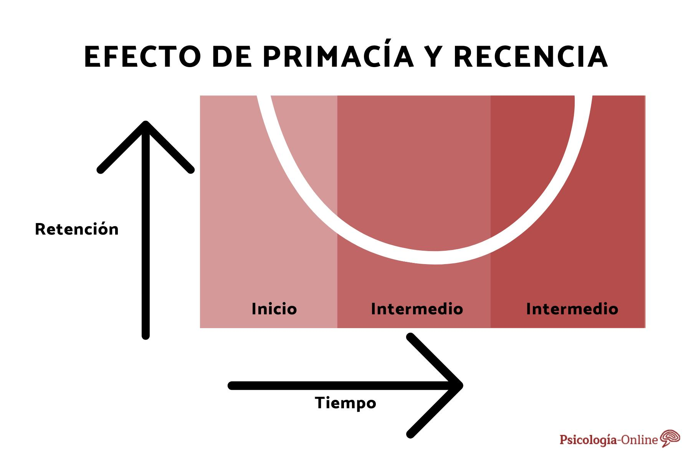

La memoria operativa, también conocida como memoria de trabajo, es el sistema donde se manipula la información de manera temporal para realizar tareas cognitivas. Se encarga de la retención y procesamiento de información necesaria para el razonamiento, la toma de decisiones y la resolución de problemas.
La memoria operativa tiene una capacidad limitada, estimada en 7±2 elementos durante unos 20 segundos si no se repasa. Esta limitación se manifiesta en efectos como la primacía y la recencia, que determinan qué información es recordada con mayor facilidad.
